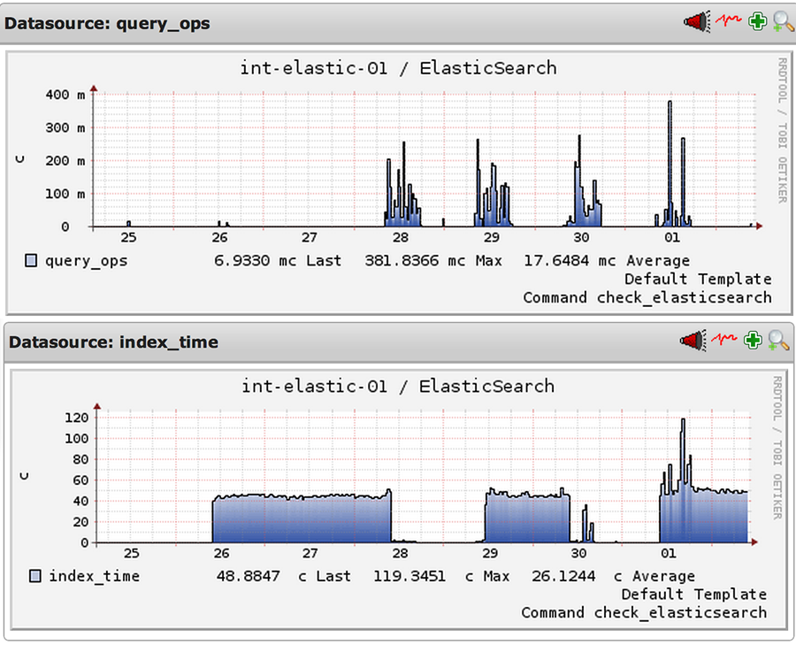
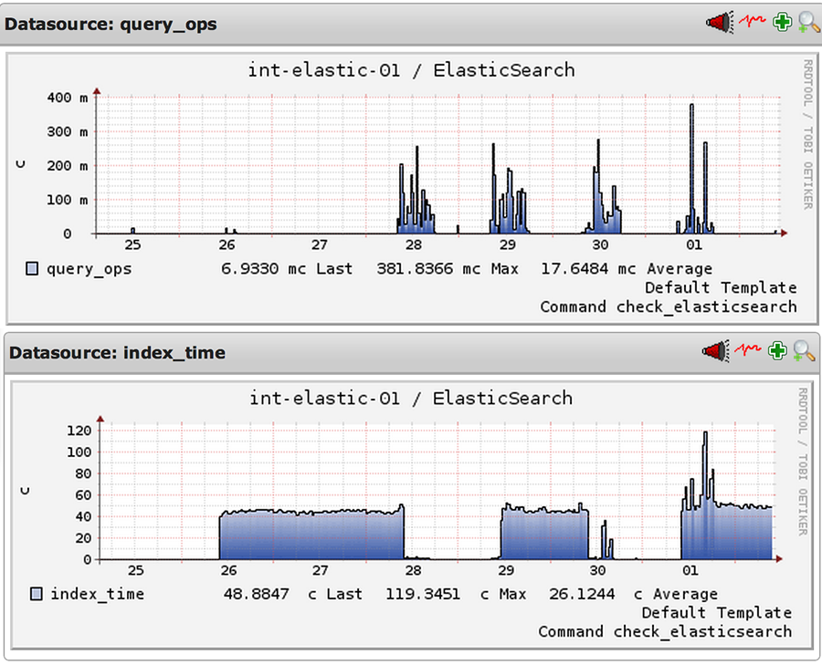
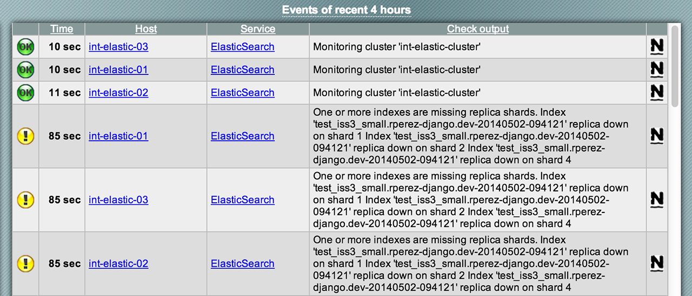

Technology for social justice.
Search: A Journey of Delivery on a Budget
Sam McLeod [ Operations ]
Ricky Cook [ Web Development ]
Who is @infoxchange?
Infoxchange is a not-for-profit
community organisation that delivers technology for social justice.
We work to strengthen communities and organisations, using information
technology as the primary tool to create positive social change.
- Web Applications
- IT Efficiency Consulting
- Community Empowerment
Our Products

- 20 Web Applications (Django, Perl & PHP)
- 300+ hosted CMS websites
- Application RPM = 4000 - 8000
Budget: Tight
- 20 Web Applications (Django, Perl & PHP)
- 300+ hosted CMS websites
- Application RPM = 4000 - 8000
Web Applications
Electronic Referral
Electronic Waitlist
Service Coordination
Health Project Management
Patient Management
Content Management
Specialising In
Homelessness
Mental Health
Eldercare
Welfare
Rich Search History
Infoxchange established the first searchable electronic
directory of community services in Australia in
1990
Since the 90's Service Seeker has included:
- Name search
- Keyword search
- Regional maps
- Vacancy search
1990 - Archie

1991 - ServiceSeeker

1995 - Google

1996 - ServiceSeeker 2

2014 - ServiceSeeker 3 (API)

The Ops Journey


Environmental Constraints
- Small Operations Team
- Slow SAN Performance
- Limited Hardware Resources
- No Search experience & limited Java experience
LOTS of Technical DebtElderly Network
Environmental Strengths
- Modern Tech: BTRFS, Docker, ZRAM & Kernel 3.14
- Strong DevOps and Agile Practises
- No Bureaucracy == Agility
- Open Source Architecture
- Newly Deployed Network
- Hardworking, Passionate People
Highly Diverse Environment

ES Hosts
- 3 Node Clusters
- OS = Debian 7 (Wheezy)
- CPU = 8x E5-2660 0 @ 2.20GHz (24 Core Cluster)
- RAM = 10GB (30GB Cluster)
- Virt = XenServer 6.2
- Kernel = linux-3.14-amd64
ES Performance & Tweaks
Heap size = half the available RAM:
ES_HEAP_SIZE = 5gFaster shard recovery:
routing.allocation.node_initial_primaries_recoveries = 4,
routing.allocation.node_concurrent_recoveries = 15
recovery.max_bytes_per_sec = 100mb,
recovery.concurrent_stream = 5Attempt to lock the process address space so it won't be swapped:
mlockall = true, Stop people from deleting all your nice things:
disable_delete_all_indices = true, Ensure kernel keep-alive timeouts < routers timeouts!
Taking out the garbage
"Stop-the-world garbage collection and blocking for disk IO can cause runtime latencies on the order of seconds to minutes."
Garbage collecting more often
=
less 'hit' to performance when it occurs
s/CMSInitiatingOccupancyFraction=[0-9]* /CMSInitiatingOccupancyFraction=35/g
Monitoring
Royrusso/ElasticHQ

Monitoring
Elasticsearch/Marvel
- Powerful Cluster Insights
- Easily Visualise Cluster Performance
- Puts Metrics In Context
- Creates Very Large Indexes
- Doesn't Clean Up After Itself
- No Longer Free
Monitoring
Nagios - PNP4Nagios
Aggregates Nagios Performance Information
 

Monitoring
Nagios + check_mk multisite
Cross-Site Elasticsearch Cluster Information

Monitoring
Nagios + XMPP (Jabber)
Realtime Cluster Notifications

ES + Logstash = Splunk4Free
(Almost)

Logstash
Puppet Managed Logstash Config
ixalogstash::input { 'syslog-docker':
input_type => 'syslog',
type_tag => 'docker',
input_port => 5550,
}
ixalogstash::input { 'syslog-nginx':
input_type => 'syslog',
type_tag => 'nginx',
input_port => 5551,
}
ixalogstash::filter { 'syslog-nginx':
type_tag => 'nginx',
filter_match => '%{COMBINEDAPACHELOG} %{QS:vhost}',
}
ixalogstash::output { "${elastic_host}":
output_type => 'elastichttp',
}Lessons Learnt
- Small Budget = Creative Solutions
- Puppet is great for managing Elasticsearch & Logstash
- Bulk indexing can be slow (more from ricky soon...)
- Test for split-brain (before it happens)
- Modern OS & kernel helps
- Java GC is painful
Lessons Learnt
- Puppet is great for managing Elasticsearch
- Small budget = creative solutions
- Bulk indexing can be slow
- Test for split-brain (before it happens)
- Modern OS & kernel helps
- Java GC is painful
- Kernel keep-alive timeouts < routers timeouts
- RAM is cheap, buy lots of it
Links & References
- Elasticsearch Pre-Flight Checklist
- Elasticsearch JVM Settings Explained
- On Elasticsearch Performance
- Managing Elasticsearch Cluster Restart Time
- Slow Cluster Restarts
- Nagios Elasticsearch Plugin
- Puppet Elasticsearch Module
- Puppet Logstash Module
- Grok Debugger
- Linux TCP/IP Tuning
- The Network Is Reliable
The Dev Journey
It "worked" in dev :/
ISS2
- Custom indexing (not just full text search!)
- Stemming (sort of)
- Keywords/Synonyms
- Area search (not quite GIS)
ISS3


(ElasticUtils)
... and Tasty Pie (which has no logo)
The Hard Parts
- GIS searches
- Private data
- Query strings
- Keywords (I KNOW RIGHT?!)
- Suggestions
- Cascaded data (slow indexing)
ElasticPie
... for consuming, not eating

Geospatial Search
GIS and IDF
Like oil and water
$$idf(t) = 1 + \log(\frac{numDocs}{docFreq + 1})$$
Use funcion score! Ignores IDF and query normalization completely
Intelligent Query Strings
- doctor in richmond
- doctor near richmond
- doctor richmond
- doctor near richmond nsw
- doctor near richmond new south wales
- doctor near richmond town hall
- doctor around richmond town hall that speaks chinese
- female doctor around richmond qld that speaks chinese

Banks, ACT
- blood banks
- blood banks in banks
- needles exchange (thank you Needles, TAS)
- The Rocks, NSW... also The Rock, NSW
Keywords
How is this even a problem?

Keywords
- New South Wales
- Allied Health Services
- Primary school
- Alternative therapy
(Ab)use Synonym filters
"type": "synonym",
"synonyms": [
"new south wales => new___south___wales,nsw",
"primari school => primari school,primary___school",
"altern therapi => altern therapi,alternative___therapy"
]
Suggestions
- Completion suggester
- ✘ NOPE
- Term suggester
- ✘ NOPE
- Phrase suggester
- ✔ YES
- Just kidding, ✘ NOPE
Fun With "Markov Chains"

You can read it later...
Celery: Distributed Tasks
aka how we "fixed"
our indexer
our indexer
(and addressed fault-tolerance)
Thank you
Sam McLeod - @s_mcleod
Ricky Cook - @ThatPandaDev
smcleod.net: smcleod.net
Infoxchange website: infoxchange.org